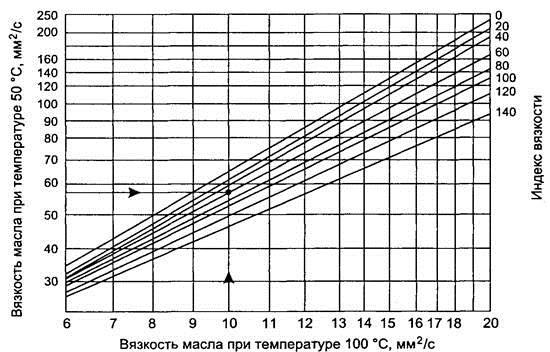
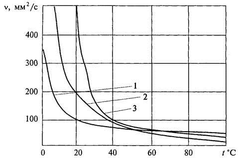

Тема 6
Классификация масел
Общие сведения
Автомобильные смазочные материалы
применяют для уменьшения потерь энергии на трение и для снижения износа
трущихся деталей.
Потери на преодоление сил трения
благодаря смазыванию снижаются в десятки и сотни раз. При современных скоростях
и нагрузках узлы сопряжения двигателя и трансмиссии разрушились бы без
смазывания в течение нескольких секунд из-за задиров, заклинивания или
расплавления и сваривания деталей вследствие выделения большого количества
теплоты.
Кроме того, смазочные материалы
охлаждают и очищают от продуктов износа трущиеся поверхности и предохраняют их
от коррозии.
Трение
Под трением понимают сопротивление
относительному перемещению, возникающее между двумя телами в зонах
соприкосновения поверхностей по касательным к ним. Различают два вида трения:
трение покоя и кинематическое. Кинематическое трение бывает сухим (без
смазочного материала), граничным и жидкостным.
Граничное трение возникает в том случае,
когда поверхности трения разделены слоем смазочного материала толщиной менее
0,1 мкм.
При жидкостном трении слой смазочного
материала полностью отделяет взаимно перемещающиеся поверхности и фактически
происходит трение между слоями смазочного материала.
Согласно закону Амонтона, сила сухого
трения скольжения F пропорциональна силе нормального давления Р тел друг на
друга:
F=f∙Р,
где
f — коэффициент трения скольжения.
При граничном трении f = 0,08—0,15.
При жидкостном трении f = 0,003—0,03.
Наиболее неблагоприятный режим трения —
граничный. Он характеризуется высоким значением коэффициента трения и вызывает
повышенный износ деталей. Различают несколько видов изнашивания: механическое,
коррозионно-механическое, абразивное и усталостное. Механическое изнашивание
возникает в результате механического воздействия. Коррозионно-механическое
изнашивание имеет место при химическом или электрохимическом взаимодействии
материалов пары трения со смазочной средой при механических воздействиях.
Абразивное изнашивание происходит в результате режущего или царапающего действия
на материал трущейся пары твердых частиц абразива, попадающих в зону контакта.
Усталостное изнашивание (осповидный износ, или питтинг) возникает при ударных
нагрузках и деформировании микрообъемов трущихся тел.
Смазочные свойства масел — это совокупность
свойств, которые влияют на процессы трения и изнашивания деталей. Основными из
них являются противоизносные, противозадирные и антифрикционные свойства.
Эксплуатационные
требования к смазочным материалам
Затраты на смазочные материалы на
автотранспортных предприятиях, как правило, не превышают 1—2 % себестоимости
одного тонно-километра.
Однако экономическое значение смазочных
материалов определяется не только затратами на них, но и их влиянием на
межремонтный пробег, топливную экономичность и производительность автомобилей.
Смазочные материалы должны отвечать
следующим требованиям:
—
обеспечивать разделение трущихся деталей надежным масляным слоем
(жидкостное трение) или создавать на их поверхности прочную масляную пленку
(граничное трение);
—
удерживаться на поверхности неработающих деталей, предохраняя их от
коррозии;
—
обеспечивать теплоотвод от трущихся деталей;
—
обладать способностью смывать с трущихся поверхностей продукты износа и
легко отделяться от них;
—
не изменять продолжительное время своих свойств в процессе работы и
хранения;
—
быть экономичными и недефицитными.
Кроме того, масла, используемые в
двигателях, должны быть химически устойчивыми при высоких температурах, а при
сгорании образовывать минимальное количество нагара.
Трансмиссионные масла должны
образовывать масляную пленку на зубьях зубчатых колес в местах их контакта, т.
е. обладать высокими противозадирными и противоизносными свойствами. Последнее
достигается введением в трансмиссионные масла химически активных присадок, которые
при высоких температурах и давлениях в зоне контакта образуют на поверхности
металла прочные сульфидные и фосфидные пленки, предотвращающие задиры трущихся
поверхностей. Сернистые масла имеют лучшие противоизносостойкие свойства, чем
бессернистые.
Получение смазочных
материалов
Смазочные материалы состоят из основного
базового материала – базового масла и активных добавок – присадок, улучшающих
или изменяющих его функциональные свойства.
По способу получения смазочные материалы
делятся на дистиллятные, полученные при вакуумном разделении мазута, и
остаточные, получаемые из гудрона путем глубокой его переработки. Дистиллятные
масла имеют низкую вязкость, остаточные — более высокую. Выход масел при
переработке из нефти составляет 2—2,5 %. Масла представляют собой смесь
углеводородов с температурой кипения 350—500 °С. Кроме углеводородов в маслах
содержатся те же примеси, что и в топливах.
Основу нефтяных масел составляют
циклоалканы (75—80 %).
Наряду с циклоалканами в маслах
содержатся ароматические углеводороды. Также в них присутствуют нафтеновые
кислоты, сернистые соединения и смолисто-асфальтеновые вещества.
Обязательным этапом при производстве
масел является очистка масел от избытка сернистых соединений и
смолисто-асфальтеновых веществ, нафтеновых кислот и парафинов. Способы очистки
выбирают в зависимости от исходного сырья и назначения масел.
Существуют следующие способы очистки:
кислотно-щелочной, селективный, контактный (адсорбционный, экстракционный).
При кислотно-щелочном способе очистки
масла обрабатывают 92—96%-ной серной кислотой, затем щелочью (для нейтрализации
остатков кислоты), промывают водой и сушат. Сернистые соединения, асфальтены
растворяются в серной кислоте и отделяются от основной массы.
При селективном способе очистки
подогретое масло смешивают с растворителем, который растворяет нежелательные
примеси, и отделяют его от масла.
Селективная очистка позволяет получать
масло более высокого качества.
Контактный способ предполагает очистку
от примесей с помощью отбеливающих глин и цеолитов. Нежелательные примеси
адсорбируются на поверхности адсорбентов и выводятся из состава масел.
При производстве высококачественных
масел выполняют очистку от углеводородов, кристаллизующихся при сравнительно
высоких температурах.
Очищенные масла называются базовыми. В
базовые масла вводят присадки, которые улучшают свойства масел, увеличивают
долговечность смазываемых узлов и удлиняют срок службы масел в три—пять раз,
снижают его расход. Присадки к маслам бывают: вязкостные, депрессорные,
антиокислителъные, противокоррозионные, противопенные, противозадирные и моющие
Антиокислительные присадки добавляют к
маслам для повышения их химической стабильности. Молекулы присадок обрывают
цепные реакции окисления.
Противокоррозионные присадки создают на
металле защитный мономолекулярный слой, препятствующий воздействию на металл
кислых и других активных агентов.
Депрессорные присадки понижают
температуру застывания масел путем разрушения кристаллического каркаса,
образованного тугоплавкими углеводородами, которые входят в состав масел.
Вязкостные присадки увеличивают вязкость
низковязких масел при положительных температурах и не оказывают существенного
воздействия при низких.
Противоизносные и противозадирные
присадки повышают смазывающую способность масел, образуют прочный пограничный
слой на поверхности металла путем химического взаимодействия активных групп
присадки с металлом.
Противопенные присадки предупреждают
вспенивание масел из-за снижения прочности поверхностных масляных пленок.
Моющие присадки диспергируют
образующиеся на поверхности металла отложения (на поршнях, кольцах) и выводят
их из зоны трения.
В базовое масло вводится 5—10 %
присадок.
Классификация масел
Масла по назначению делятся на моторные
(для двигателей), трансмиссионные (для трансмиссии) и гидравлические (для
гидравлических систем автомобиля).
Одним из основных свойств масел является
их вязкость. Под вязкостными свойствами масла понимают совокупность свойств,
характеризующих вязкость данного масла в заданных условиях работы в зависимости
от температуры, давления и приложенного напряжения сдвига. С понижением
температуры вязкость масла повышается. Зависимость вязкости от температуры
характеризует вязкостно-температурные свойства масла. От вязкости в
значительной мере зависят режим смазывания, величина энергетических потерь,
пуск двигателя, прокачиваемость масла по смазочной системе. Поэтому смазочные
масла должны обладать оптимальной вязкостью при рабочей температуре, которая по
возможности должна как можно меньше зависеть от температуры окружающей среды.
Моторные масла работают в следующих
условиях: давление до 100 МПа, температура отработавших газов до 2000 °С. При
этом выделяют три температурные зоны: высокотемпературную, среднетемпературную
и низкотемпературную.
К высокотемпературной зоне относятся:
камера сгорания и днище поршня, которые нагреваются от 400 до 800 °С; к
среднетемпературной — поршень с кольцами и пальцем, стенки цилиндра (до 300—350
°С); к низкотемпературной — картер и коленчатый вал (до 100—180 °С).
Кинематическая вязкость моторных масел нормируется при температурах 100, 0 и
—18 °С.
Условия работы трансмиссионных масел
иные. Они должны быть работоспособны при температурах от —50 до +50 °С. Кинематическая
вязкость для трансмиссионных масел нормируется при температурах 100, 50 и 0 °С.
В маркировку масел входит вязкость при
температуре 100 °С как для моторных, так и для трансмиссионных масел.
Непостоянство условий эксплуатации,
связанное с пуском двигателей, изменением скоростных и нагрузочных режимов,
сменой времен года, отражается на температуре работающего масла, что влечет за
собой изменение вязкости. Поэтому вязкость масла должна как можно меньше
зависеть от температуры. Эту зависимость показывает вязкостно-температурная
характеристика (ВТХ), по которой определяют индекс вязкости.
Индекс вязкости — условный показатель,
отражающий результат сопоставления вязкостного показателя данного масла с двумя
эталонными, при этом вязкостно-температурные свойства одного приняты за 100, а
другого за единицу. Для вычисления индекса вязкости пользуются номограммами
(рис.1). Для моторных незагущенных масел индекс вязкости должен быть до 100,
для загущенных — 115—140, для трансмиссионных — 90—140.

Рис.1. Номограмма для определения
индекса вязкости
У масел с низкой вязкостью зависимость
от температуры значительно меньше, чем у масел с высокой вязкостью. Чтобы сохранить
хорошие вязкостно-температурные свойства низковязкостных масел, их загущают. В
качестве исходных базовых масел для загущения используют масла с вязкостью при
температуре 100 °С менее 5 мм2/с. Загущающей присадкой являются
полимерные материалы — полиизобутилен, полиметакрилат и др. Добавка составляет
3—4 %. Загущенные таким образом масла имеют необходимые значения вязкости при
положительных температурах, пологую кривую изменения вязкости, присущую
низковязким маслам. Принцип действия вязкостных присадок основан на способности
макромолекул полимера с понижением температуры свертываться в клубочки, не
влияя на вязкость масел, а при положительных температурах клубочки
разворачиваются в разветвленные цепи, увеличиваясь в объеме и повышая вязкость
масел.
На рис. 2 показано влияние присадки на
вязкость масла при различных значениях температуры.
Температура
застывания
При понижении температуры значение
вязкости масла растет и в конце концов масло теряет свою текучесть, т. е.
застывает. Застывание масла связывают с наличием в нем высокоплавких н-алканов.
Застывшее масло не прокачивается и не смазывает детали, которые в результате
работают при сухом трении с большим износом.

Рис. 2. Влияние присадки на вязкость v
масла при различных значениях температуры: 1 — маловязкое масло; 2 — маловязкое
загущенное масло; 3 — высоковязкое масло
Снижения температуры застывания масла
добиваются путем депарафинизации и добавок депрессаторов. Значение температуры
застывания масла нормируется ГОСТом: для незагущенных моторных масел — 20—30
°С, для загущенных — от —35 до —45 °С, для трансмиссионных — от —18 до —55 °С.
Стабильность
Масло при работе в двигателях и других
агрегатах окисляется кислородом воздуха, в результате чего в нем появляются
новые вещества (смолы, органические кислоты и т. п.). Различают физическую и
химическую стабильность.
Масла обладают высокой стабильностью до
температуры 50 °С. Поэтому масла можно хранить более 5 лет. При более высоких
температурах стабильность снижается, а их коррозионное воздействие
увеличивается.
Физическая стабильность характеризуется
испаряемостью масла, которая определяется температурой вспышки.
Температурой вспышки называют минимальную
температуру, при которой пары масла, смешиваясь с воздухом, образуют смесь,
воспламеняющуюся от открытого огня. Температура вспышки для моторных масел не
ниже 200 °С, для трансмиссионных — 128 °С и выше.
Химическая стабильность характеризуется
кислотным или щелочным числом. В процессе работы масла окисляются до
альдегидов, карбоновых кислот и т. п., что увеличивает их коррозионное
воздействие на металл.
Щелочное число определяется количеством
едкого калия (в мг), эквивалентным количеству соляной кислоты, израсходованной
на нейтрализацию сильных оснований, содержащихся в 1 г масла. По ГОСТу
кислотное число для масел должно быть не более 2—6 мг.
Содержание механических примесей и воды
в маслах не допускается. Вода при перемешивании с маслом создает эмульсию,
ухудшая смазывание деталей. В зимнее время из-за замерзания вода может вызвать
поломку масляного насоса.
Наиболее эффективный способ повышения
антиокислительных свойств масел — добавление специальных присадок
(фтор-углеродистых, дитиофосфатов, диолов и др.)
Контрольные вопросы
1. Назовите способы очистки масел. Дайте
им сравнительную оценку.
2. Перечислите присадки к маслам. Каково
их назначение?
3. На что влияет вязкость масла при
эксплуатации двигателя?
4. Каковы условия работы моторных масел?
5. Для каких температур нормируется
вязкость моторных и трансмиссионных масел?
6. Что такое индекс вязкости масла?
7. Назовите способы понижения
температуры застывания масла.
8. Что такое щелочное число?